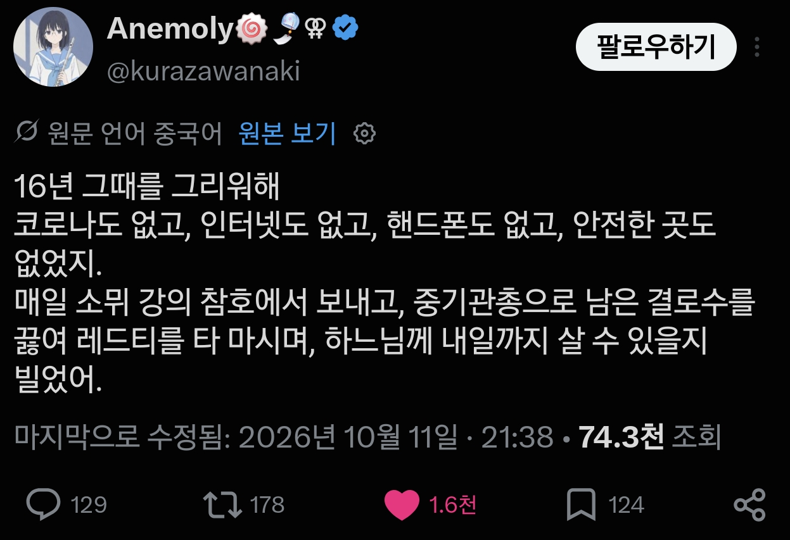

티퍼레리까지는 길이 멀구나
가기엔 참 멀기도 하지
티퍼레리까지는 길이 멀구나
내 아는 여인 중 가장 사랑스런 이가 사는 곳

티퍼레리까지는 길이 멀구나
가기엔 참 멀기도 하지
티퍼레리까지는 길이 멀구나
내 아는 여인 중 가장 사랑스런 이가 사는 곳
아 20세기 16년?
영국군이시고
안녕히, 피카딜리,
잘 있거라, 레스터 광장,
티퍼레리까지는 길이 멀기도 멀지만
내 마음은 그곳에 있다네!
곧 스페인 독감이 올거야 위생챙겨
겨자가스 함 맡아볼래?

아 1916 ..
하지만 히틀러와 스탈린은 있지
저 노래 특전유보트에서 독일승조원들이 부르던데 영국노래란거 알고 신기했음
아 1916
코로나 이후로 쓸데없이 모이자는 사람도 사라지고, 회식 싹 다 사라져서 너무 좋음
저때도 사람 싹 다 사라지고 모이지도 못하기도 하긴 했음
아.......ㅠㅠ
나도 이거 너무 공감
잔재처럼 남아있던 옛날 회사 문화 이때 거의 대부분 사라짐
하지만 스페인 독감이 왔다네~
아 그 16년도
1916??ㅋㅋ
1차세계 대전이라니